🔰 超入門 ·
小學生也能懂的『GitHub』超入門
從註冊帳號到讓 AI 幫你 commit、push，每一個要按的按鈕都附實際畫面截圖。
🖍 先看圖解版用最少的字、最大的圖說一次我一直覺得 GitHub 是「工程師才會去的地方」，直到自己被一個資料夾搞到崩潰，才知道早該用它。
事情是這樣的：那個資料夾裡躺著「提案書.docx」、「提案書_修改版.docx」、「提案書_最終版.docx」、「提案書_最終版_這次真的.docx」。改到第七個檔名的時候，我已經分不出哪一版是對的了。
GitHub 這個名字，你是不是也在哪裡看過一次？
但它到底是做什麼用的，其實不太清楚吧。
「那不是寫程式的人才會用的東西嗎？」
「我又不會打指令，是不是就沒我的份？」
抱著這樣的疑惑，默默把畫面關掉的人應該不少。
這篇文章分成五個章節。前三章說明 GitHub 是什麼、怎麼用、該注意什麼；第四章帶你一步一步申請那把「讓程式代替你登入」的鑰匙；第五章談一件這兩年才成立的事——讓 AI 代替你去操作它。
專有名詞會全部拆開來講，每一個要按的按鈕都會附上截圖。就算你現在完全零知識，也可以放心閱讀。
※本文中 GitHub 的畫面與規格，是截至 2026 年 9 月為止，實際操作官方網站並確認官方文件後的內容。
第一章：GitHub 是什麼｜幫你的作品「按存檔」的雲端保管室
「GitHub 最近很常聽到，但它到底是做什麼的？」
這個問題，我被問過非常多次。
看過那隻黑白色貓咪章魚標誌的人應該很多。
但能說出它到底做了什麼的人，意外地很少。
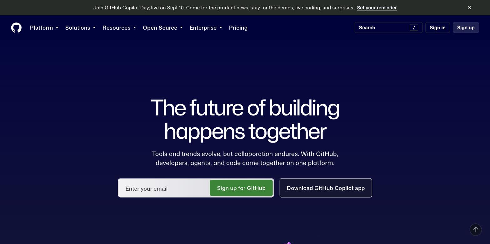
先講結論。
GitHub，是一間幫你把作品的「每一次存檔」都完整保管下來的雲端保管室。
它不是拿來寫程式的工具。 也不是只有程式可以放。 它是一個地方，把你做東西的「過程」整條記錄下來，而不是只留下最後那一版。
想像你在打一款很難的電玩
打大魔王之前，你會做什麼？
你會先按存檔。
然後才敢衝進去。打輸了，就讀取剛才那個存檔重來一次，不用從第一關開始。
GitHub 做的事情，就是把「按存檔」這件事，搬到你做作品的過程裡。
每按一次存檔，就留下一個時間點。作品被改壞了，就退回上一個存檔點。 專有名詞叫做「commit（提交）」。
而且這個存檔點跟電玩不一樣的是，你可以在旁邊寫一行字：「這次調整了首頁的字體大小」。
三個月後回頭看，你會非常感謝當初寫下那行字的自己。
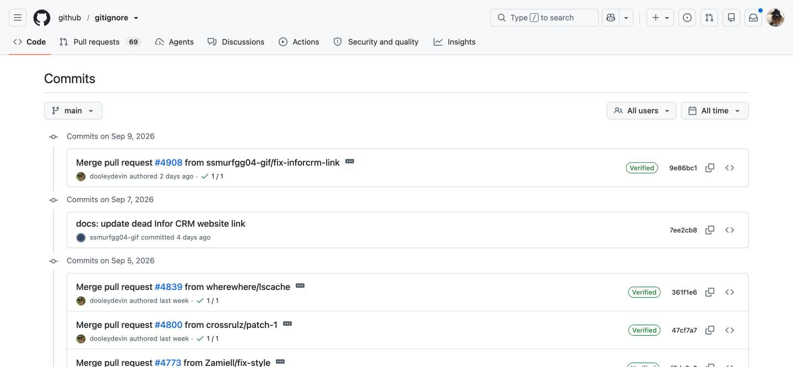
7ee2cb8 是這個存檔點的身分證號碼。那個放存檔的箱子，叫做倉庫
一個作品，配一個箱子。
網站一個箱子，論文一個箱子，食譜筆記一個箱子。箱子裡放檔案，也放這個箱子從出生到現在的所有存檔點。
專有名詞叫做「repository（倉庫）」，一般人都直接叫它 repo。
你電腦裡有一個箱子，GitHub 的雲端上也有一個一模一樣的箱子。兩邊會互相同步。
從電腦把存檔送上雲端，叫「push（推上去）」。 從雲端把別人的更新拿回電腦，叫「pull（拉下來）」。
推上去、拉下來。就這兩個字，是你以後最常聽到的兩個動作。
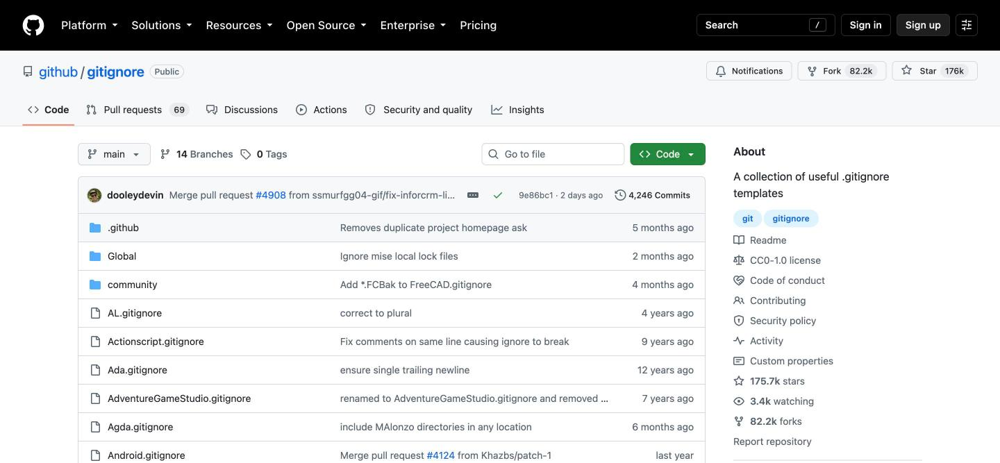
為什麼要多此一舉放到雲端？
三個理由。
第一，電腦壞掉也不會死。 筆電被咖啡潑到、硬碟突然打不開——這些事情不會提前通知你。東西在雲端有一份，你損失的只是一台電腦，不是三個月的心血。
第二，可以多人一起做同一件事。 兩個人改同一份東西，最怕的是互相蓋掉對方。GitHub 會幫你比對「你改了哪幾行、他改了哪幾行」，能自動合的就自動合，合不了的會停下來問你。
第三，可以安全地亂搞。 想試一個很大膽的改法，又怕改壞？那就先「影印一份」出來，在影印本上盡情亂搞。成功了就合併回正本，失敗了整份丟掉，正本一根寒毛都沒動到。
專有名詞叫做「branch（分支）」，合併回去叫「merge（合併）」。
我剛開始寫東西的時候，是靠複製整個資料夾來做備份的。改一次，複製一份，資料夾名稱後面加一個日期。
結果就是硬碟裡塞了四十幾個長得幾乎一樣的資料夾，而我完全想不起來 0712 那一版跟 0715 那一版差在哪裡。
「留下版本」和「留下版本之間的差異」，是兩件完全不同的事。這件事我是繞了一大圈之後才懂的。
而且這些功能，個人用全部免費。公開的箱子免費，不公開的箱子也免費，數量沒有上限。
到這裡，我們已經知道 GitHub 是幫你保管每一次存檔的雲端保管室。
接下來，就來看實際上該怎麼開始。
第二章：GitHub 的基本用法｜四個動作就能開始
你可能會覺得「一定要會打指令吧」。
不一定。GitHub 有官方的圖形介面軟體，全程點滑鼠就能完成。
基本流程，就只有四個動作。我們一個一個、照著圖做。
動作一：申請免費帳號
打開 https://github.com/signup 。
它會一個一個問你：
① Enter your email（輸入你的信箱） 填好按 Continue。
② Create a password（設定密碼） 至少 15 個字，或是「8 個字以上且含有數字與小寫字母」。建議直接用密碼管理器產生一組亂碼。
③ Enter a username（取一個名字） 這就是你在 GitHub 上的名字，會出現在你所有作品的網址裡（github.com/你的名字）。 全世界不能重複，而且以後改名很麻煩，請認真取。建議用英文小寫加連字號，例如 chris-hsu。
④ 過一次「我不是機器人」的驗證 GitHub 的註冊頁會要你滑一下滑塊、或點幾張圖。這一步只能人工操作。
⑤ 收信，輸入 8 位數驗證碼 GitHub 會寄一封信給你，把裡面的數字填進去。
完成。你已經有帳號了。
動作二：打開兩階段驗證（2FA）
這一步不能跳過。
從右上角頭像 → Settings → 左邊選單的「Password and authentication」，往下捲，就會看到這一區。
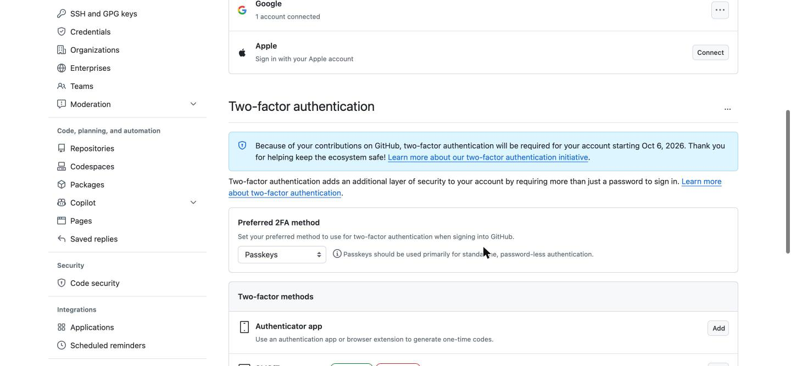
理由也很正當：你的帳號裡以後會放著你所有的作品。
可以選的方式有幾種：
- Authenticator app（手機驗證 App，推薦）：用 Google Authenticator、1Password 這類 App 掃一下畫面上的 QR Code，之後每次登入輸入 App 上的六位數字。
- Passkeys（通行金鑰）：用手機或電腦的指紋、臉部辨識登入，連密碼都不用打。
- SMS（簡訊）：收簡訊驗證碼。最方便，但安全性最低。
設定完成後，畫面會給你一組 recovery codes（救援碼），共 16 組。請按「Download」存下來，印出來放抽屜也可以。
手機掉了的時候，那是你唯一進得去帳號的辦法。
動作三：開一個倉庫
回到 GitHub 首頁，按右上角的 ＋ 號，選 New repository。
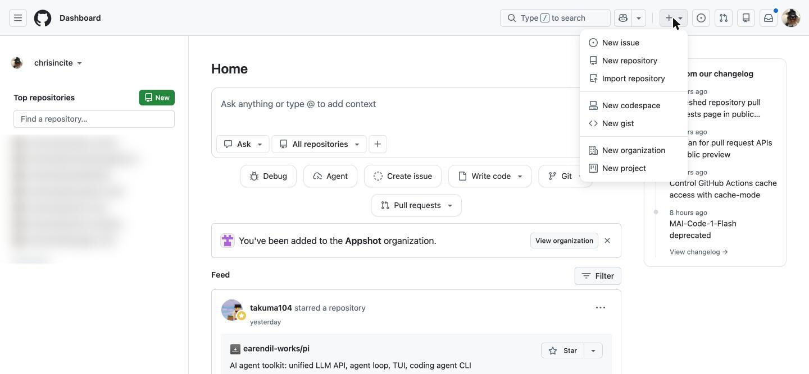
接著會看到建立表單，分成 1 General 和 2 Configuration 兩段：
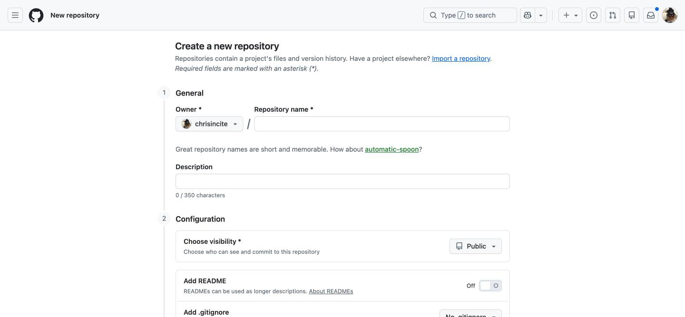
① Repository name（箱子的名字）＊必填 英文小寫、用連字號連接，例如 my-first-site。 下面那行 How about automatic-spoon? 是 GitHub 隨機幫你想的名字，不想取名可以直接點它。
② Description（說明，可留空） 一句話說明這個箱子裝什麼，上限 350 字。
③ Choose visibility（誰看得到）＊最重要的一個決定
這是一個下拉選單，預設是 Public。點開來會看到兩個選項：
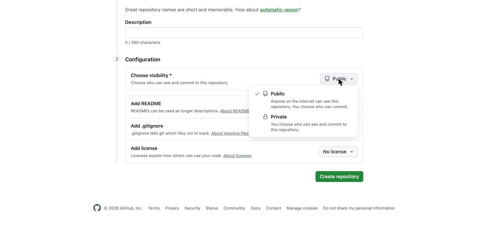
- Public（公開）＝ 全世界都看得到裡面的內容
- Private（私人）＝ 只有你和你邀請的人看得到
不確定的話，先選 Private。之後隨時可以改成公開；但反過來，公開過的東西要收回來，已經來不及了。
④ 把「Add README」的開關打開
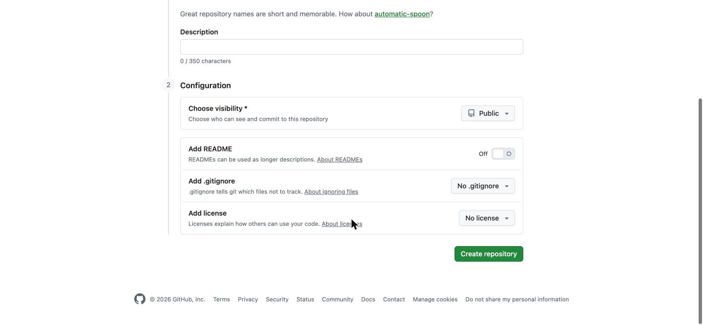
README 是箱子的封面說明。打開它，GitHub 會幫你先放一個檔案進去，箱子就不會是空的——這對後面的步驟比較順。
下面還有兩項，第一次可以先不管：
- Add .gitignore：先幫你放一份「哪些檔案不要管」的清單（第三章會講）
- Add license：授權條款。只有公開倉庫才需要考慮
按下綠色的 Create repository，箱子就建好了。
動作四：把箱子複製到電腦，然後開始存檔
到這裡為止都在網頁上。接下來要把箱子搬一份到自己的電腦。
先挑一個工具，三選一：
- GitHub Desktop：官方免費軟體，全圖形介面，完全不用打指令。新手建議先用這個。下載：https://desktop.github.com
- VS Code：如果你已經在用它，左邊那排圖示裡就內建了，不用另外裝。
- 指令列（git 指令）：最通用，以後跟 AI 合作時也最順。怕的話先跳過，第五章會回來救你。
不管用哪一個，起點都是倉庫頁面上那顆綠色的 Code 按鈕：
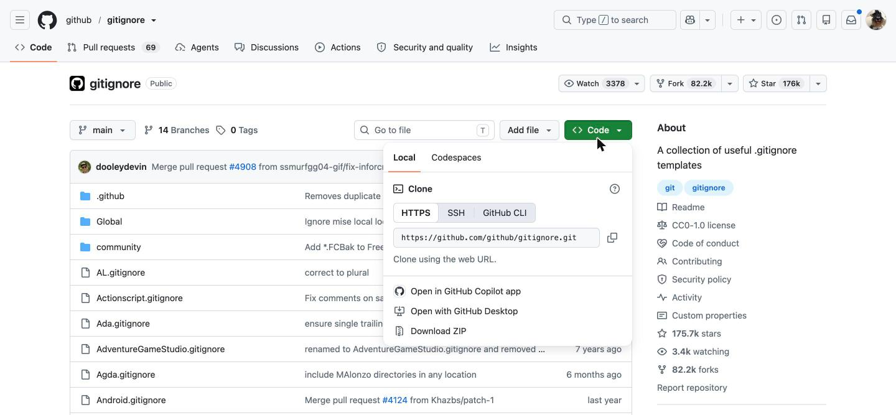
① Clone（複製到電腦） 用 GitHub Desktop 的話，選 File → Clone repository，清單裡會出現你剛剛建的箱子。選它，指定要放在電腦的哪個資料夾，按 Clone。
你的電腦裡就多出一個資料夾了。以後把檔案丟進這個資料夾，就等於放進箱子裡。
② 改點東西 隨便改一個檔案，或丟一個新檔案進去。
③ 存檔（commit） 切回 GitHub Desktop，左邊會列出「你改了哪些檔案」。
這裡其實同時做了兩件事：
- add（挑選）：從改過的檔案裡，挑出要存進這個存檔點的那幾個。就像整理行李——這次出門要帶的，先擺到床上。打勾就是挑選。
- commit（存檔）：在左下角填一行說明文字，按下藍色的
Commit to main。
說明文字怎麼寫？寫給三個月後的自己看：
- 好：「修正聯絡頁的錯字」、「加上第三章的內容」
- 不好：「更新」、「修改」、「aaa」
④ 推上去（push） 存完檔，右上角會出現 Push origin。按下去，存檔點就送到雲端的箱子了。重新整理網頁就看得到。
挑選 → 存檔 → 推上去。 打勾、打字、按兩顆按鈕，結束。
反過來，如果有人動過雲端的箱子（或是你換了另一台電腦），開工前先按 Fetch origin / Pull origin，把最新的狀態拿回本機。
先拉、再改、再推。 這個順序請先背下來，下一章會告訴你不照做會發生什麼事。
第三章：初學者該注意的三個重點｜這些陷阱務必避開
GitHub 雖然非常方便，但也有需要注意的地方。
不了解機制就一路按下去，會發生意想不到的麻煩。
以下三個，是我看過最多人踩到的。
注意事項一：密碼和金鑰，絕對不能推上去
這是後果最嚴重的一個。
很多服務會發給你一串「API 金鑰」，那是你的帳號鑰匙。如果你把它寫在檔案裡，又把那個檔案 push 到公開的倉庫——
網路上有機器人二十四小時在掃描公開倉庫裡的金鑰。以分鐘為單位就會被撿走。
更麻煩的是：存檔點是刪不掉的。
你今天把金鑰推上去，明天才發現，然後急忙把那一行刪掉再推一次——沒有用。昨天那個存檔點還好好地躺在歷史紀錄裡，任何人都翻得到。
正確做法有兩層：
第一層：放一個 .gitignore 檔案
在倉庫資料夾裡建一個檔名叫 .gitignore 的純文字檔（注意開頭那個點），把「絕對不要被 GitHub 碰到」的檔案寫進去。
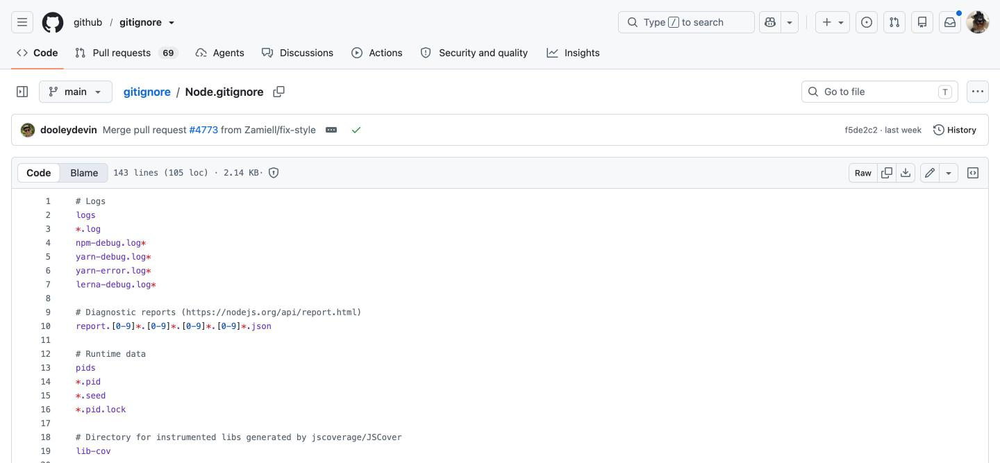
# 開頭的是註解。*.log 的意思是「所有結尾是 .log 的檔案都不要管」。GitHub 官方在 github.com/github/gitignore 準備了上百種現成版本，直接抄。給新手的最小版本，大概長這樣：
.env
secrets.json
*.key
node_modules/寫進去的檔案，GitHub 會當作看不見。
第二層：萬一真的推上去了
第一件事不是刪檔案，而是立刻到發金鑰的那個服務去把它作廢，換一把新的。
已經外流的鑰匙，唯一的處理方式是換鎖。
注意事項二：推之前先拉，不然會被擋下來
第二個是每天都會遇到的狀況。
情境是這樣：你在自己電腦上改完，按下 push，結果跳出一段紅字說 rejected，推不上去。
新手看到這個通常會慌，以為東西壞了。
沒有壞。它只是在說：雲端上的箱子，已經比你手上這個新了。有人在你之前先推了東西上去。
! [rejected] main -> main (fetch first)
error: failed to push some refs to 'https://github.com/...'
hint: Updates were rejected because the remote contains work that you do not have locally.如果放任你直接推，對方那次的更新就會被你蓋掉。GitHub 擋下你，是在保護那個人。
做法很單純：先 pull 把對方的更新拉回來，跟你的合併，再 push。
大部分的時候它會自動合完，你完全不用做事。只有在「你跟他改到同一個檔案的同一行」時，它才會停下來，在檔案裡用一串符號標出兩邊的版本：
<<<<<<< HEAD
這是你寫的那一行
=======
這是對方寫的那一行
>>>>>>> origin/main那叫「conflict（衝突）」。看起來很嚇人，但它的本質只是一個選擇題：留你的、留他的，或是兩個都留。選好之後，把那三行符號刪掉就結束了。
還有一個延伸提醒：如果你在網路上看到有人教你用 git push --force，先不要用。那個指令的意思是「不管雲端上有什麼，用我的蓋過去」——它真的會照做，別人的存檔點會直接消失。
注意事項三：GitHub 不是雲端硬碟
第三點，是關於「什麼東西適合放進去」。
GitHub 擅長的是文字。程式碼、文稿、設定檔——這類檔案它能精準地比對出「你改了哪一個字」，所以三百個存檔點也才佔一點點空間。
但如果你放的是影片、高解析度的設計原始檔、幾百張照片，狀況就完全不同了。
這類檔案改一個小地方，對它來說就是「整個檔案都變了」。於是每存一次檔，就多囤一份完整的檔案。
十次存檔之後，一個 200MB 的影片，在你的箱子裡佔了 2GB。而且因為存檔點刪不掉，這 2GB 會永遠跟著這個箱子，連複製一次都要等很久。
實務上的界線：單一檔案超過 50MB 會收到警告，超過 100MB 會直接被拒絕。
- 適合放：文字檔、程式碼、markdown 文件、小圖示
- 不適合放：影片、大量照片原始檔、幾百 MB 的素材、可以重新產生出來的東西
大檔案請放雲端硬碟或專門的空間，在倉庫裡留一個連結就好。
到這裡，我們已經掌握了初學者該避開的三個陷阱。
接下來這一章，是為了讓 AI 幫你做事而準備的。
第四章：申請 Access Token｜給程式用的專屬鑰匙
為什麼需要這個東西？
你用瀏覽器登入 GitHub，是輸入密碼加上手機驗證碼。
但如果是一個程式要幫你做事——例如 AI 助理要幫你 push——它沒辦法去你手機上看驗證碼。
所以 GitHub 從 2021 年開始，就不再接受用登入密碼來操作 git 了。程式必須改用另一種東西：
Personal Access Token（個人存取權杖，簡稱 PAT）
你可以把它想成「旅館的房卡」：
- 不是你家大門鑰匙（那是你的密碼）
- 只能開指定的幾扇門（權限可以限縮）
- 會自動過期（可以設定天數）
- 掉了就作廢重發，你家大門不受影響
這是一個非常合理的設計。而你，需要親手發一張這種房卡。
兩種 token，先搞清楚差別
GitHub 現在有兩種：
| Fine-grained token（細粒度） | Classic token（傳統） | |
|---|---|---|
| 能指定哪幾個倉庫 | 可以，最多 50 個 | 不行，一發就是全部 |
| 權限細分 | 很細，一項一項加 | 很粗 |
| 有效期 | 7／30／60／90 天、自訂、不過期 | 同左 |
| 官方推薦 | ✅ 推薦 | 舊系統相容用 |
請用 Fine-grained token。 以下的步驟都以它為準。
但在動手之前：其實你可能不需要自己申請
如果你要做的事情就只是「讓 AI 幫我 commit 和 push」，有一條更輕鬆的路：
安裝 GitHub 官方的指令列工具 gh，然後執行一次授權。
# macOS
brew install gh
# Windows
winget install --id GitHub.cli裝好之後，在終端機輸入：
gh auth login它會問你幾個問題，一路按 Enter 選預設值：
? What account do you want to log into? GitHub.com
? What is your preferred protocol for Git operations? HTTPS
? Authenticate Git with your GitHub credentials? Yes
? How would you like to authenticate? Login with a web browser
! First copy your one-time code: A1B2-C3D4
Press Enter to open github.com in your browser...它給你一組八碼的英數字，瀏覽器會自動打開，你把那組碼填進去：
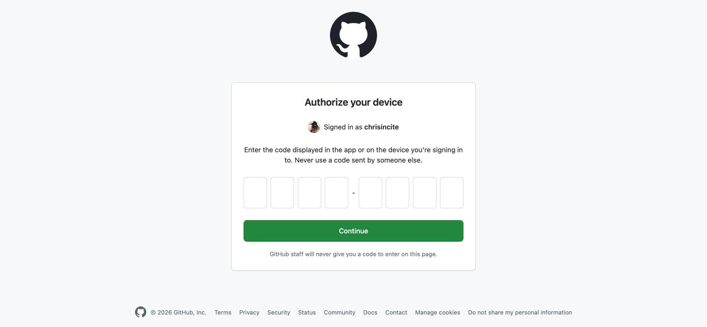
這條路的好處：token 由 gh 自己保管，你從頭到尾不會看到那串字，也就不可能不小心把它貼到哪裡去。
對新手來說，這是我最推薦的做法。
那什麼時候才需要自己手動申請 token？
- 你要在別人的伺服器、雲端主機上跑自動化
- 你要用第三方工具（不是 GitHub 官方的）去存取你的倉庫
- 你想把權限限縮到「只有這一個倉庫、只能讀不能寫」
以下就是手動申請的完整步驟。
步驟一：進到 Settings
點右上角你的頭像，選單中段有 Settings。
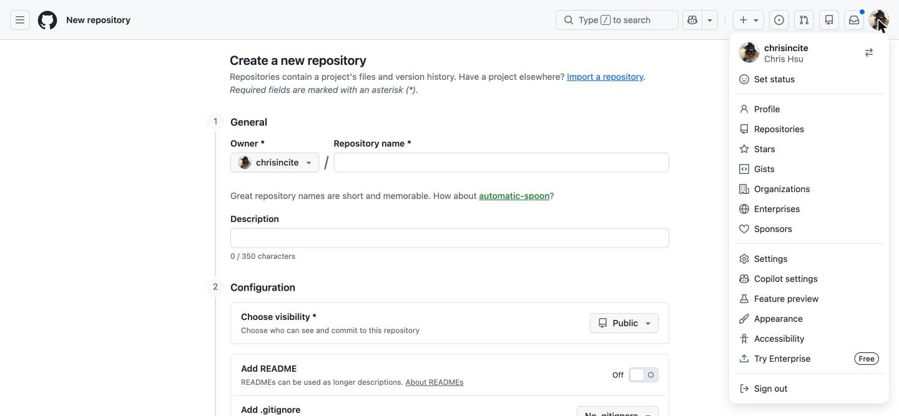
步驟二：拉到最下面，進 Developer settings
Settings 的左邊是一整排選單。一路拉到最底下，最後一項就是 Developer settings。
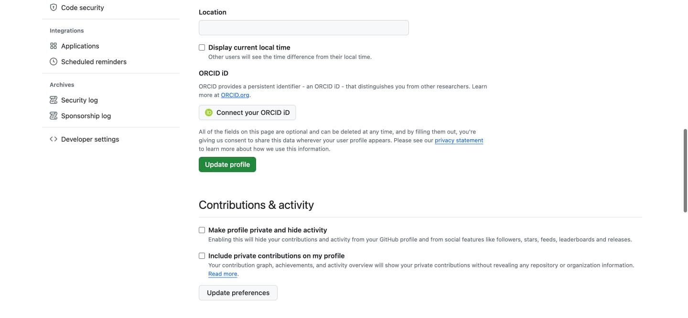
<> 圖示。或者，直接把這個網址記起來，省掉前兩步：
https://github.com/settings/tokens
步驟三：選 Fine-grained tokens，按 Generate new token
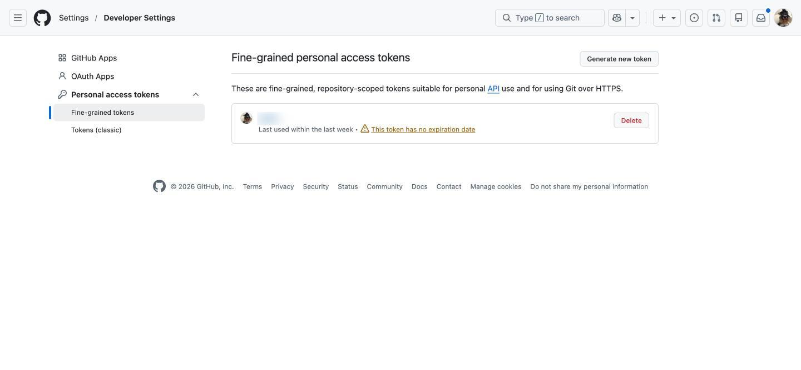
這時它可能會要你再輸入一次密碼，或是手機驗證碼。正常，這是在確認是你本人。
步驟四：填寫這張房卡的規格
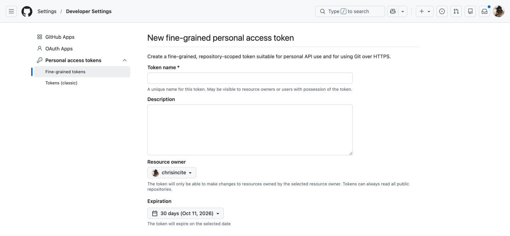
① Token name（名字）＊必填 給它一個你看得懂的名字，例如 claude-code-mbp。
這個名字的用途是：三個月後你看到一排 token，要能立刻知道哪一張是給誰用的、哪一張可以安全地刪掉。請不要叫它 test。
② Description（說明，可留空） 寫清楚這張卡是要拿來做什麼的。
③ Resource owner（這張卡能碰誰的東西） 如果是你個人的倉庫，就選你自己的帳號（預設值）。如果要碰組織的倉庫，選那個組織——那可能需要組織管理員批准。
④ Expiration（有效期） 預設是 30 天。點開來有六個選項：
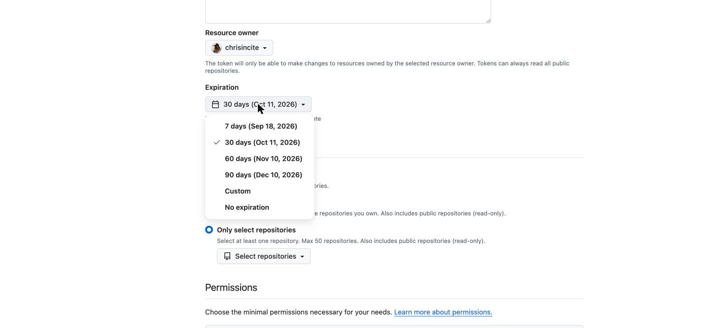
建議選 90 天，不要選 No expiration。
會過期不是缺點，那是安全機制——就算哪天外流了，傷害也有個終點。
步驟五：選擇這張卡能開哪幾扇門
往下捲，是 Repository access，三個選項：
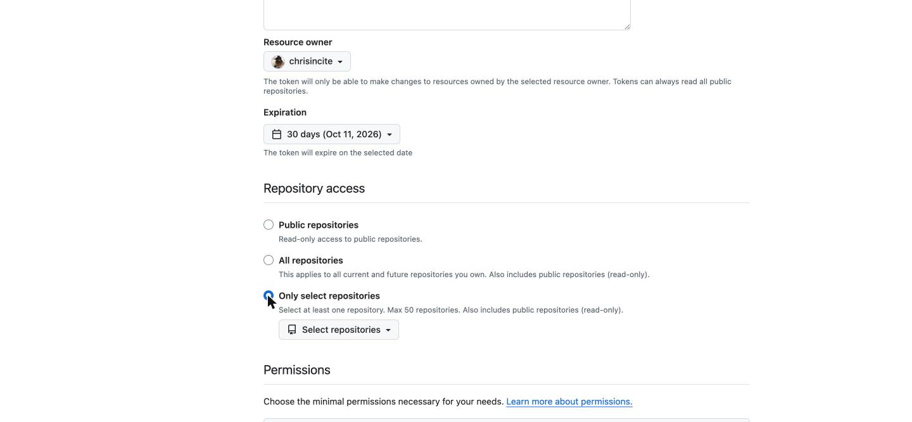
- Public repositories：只能唯讀存取公開倉庫
- All repositories：你現在和以後所有的倉庫都能碰 ← 權限太大，不建議
- Only select repositories：只能碰你指定的那幾個 ← 選這個
這就是 fine-grained token 最大的價值：萬一這張卡掉了，損失範圍就只有你勾的那幾個箱子。
⚠️ 順序很重要：一定要先選好 Repository access，下一步的「倉庫權限」才會出現。 如果停在預設的 Public repositories，Permissions 區塊只會有 Account 一個分頁，你會找不到 Contents 在哪裡。
步驟六：選擇權限（這步最容易做錯）
繼續往下，是 Permissions。它現在不是一長串清單了，而是一顆 Add permissions 按鈕。
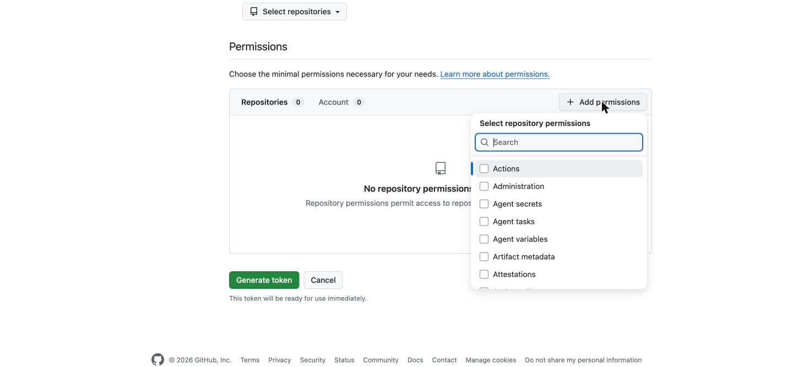
清單很長（Actions、Administration、Attestations……）。不用一個一個看，直接在搜尋框打字：
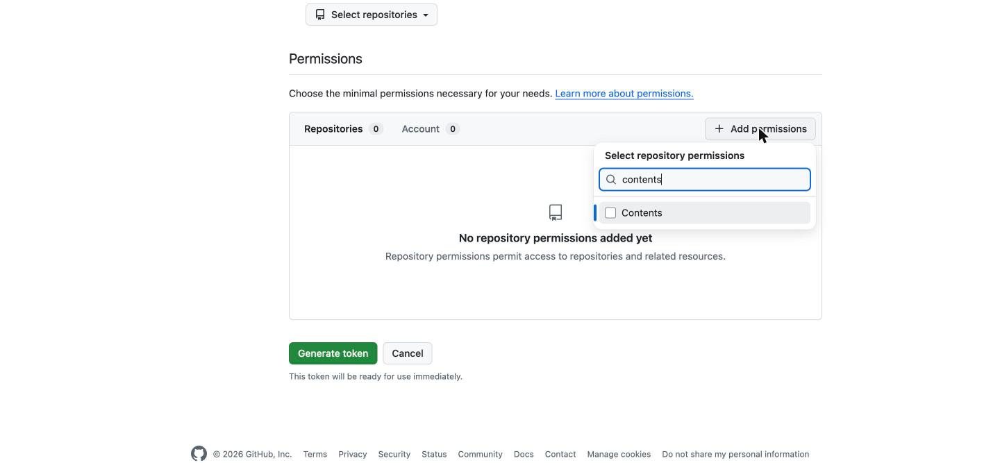
contents，清單就只剩下 Contents 一項。把左邊的方框勾起來。勾完之後按 Esc 關掉清單，你會看到 Contents 被加進來了，而且 Metadata 被自動加上並標示 Required（那是 GitHub 強制的，不用管它）。
這時 Contents 右邊預設是 Access: Read-only（唯讀），要把它改掉：
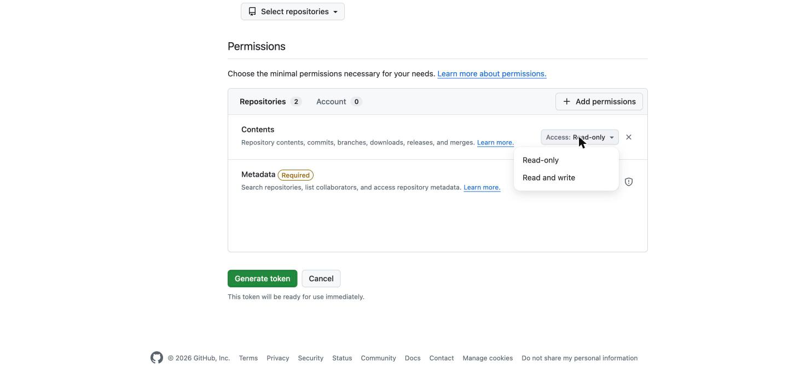
- Contents：Read and write ← clone、pull、commit、push 需要的權限。改這一項就好。
- Metadata：Read-only ← 自動帶入，不用動。
其他的視需要再加：
| 你想做的事 | 要加的權限 |
|---|---|
| 推送程式碼（最常見） | Contents: Read and write |
| 開／回覆 issue | Issues: Read and write |
| 開 Pull Request | Pull requests: Read and write |
| 改倉庫設定 | Administration: Read and write（非必要不要給） |
原則：能不給的就不給。 這張卡以後要交給一個程式使用，你給它的每一個權限，都是它出錯時能造成的傷害範圍。
步驟七：產生，然後立刻複製
拉到最下面，按綠色的 Generate token。
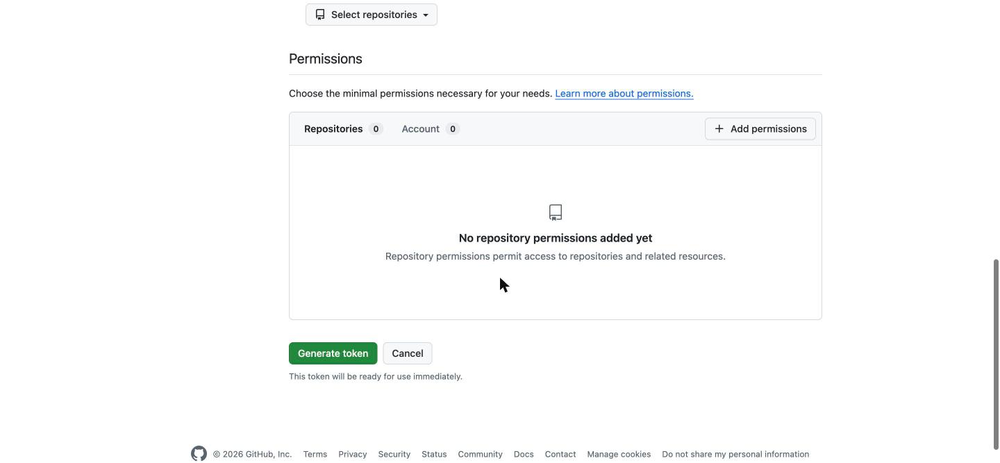
畫面會跳出一串以 github_pat_ 開頭的長字串，旁邊有一個複製圖示。
這是整個流程最重要的一句話
這串字只會顯示一次。
不是「藏在某個地方要找一下」，是真的不再顯示。忘了複製就只能重來一次，重發一張新的。
複製之後要放哪裡？
- 最好：貼進密碼管理器（1Password、Bitwarden 這類）
- 可以：讓
gh或 GitHub Desktop 幫你保管 - 絕對不行：貼在記事本、聊天室、程式碼檔案裡，或是任何會被 push 上去的地方
怎麼用它？
拿它當密碼用。當你 git push 時，它問你：
Username for 'https://github.com': 你的帳號名稱
Password for 'https://...': 貼上 token（不是你的登入密碼）貼上去的時候畫面不會有任何反應（不會顯示星號），那是正常的。貼完直接按 Enter。
如果不想每次都貼一遍，讓系統幫你記住：
# macOS（存進鑰匙圈）
git config --global credential.helper osxkeychain
# Windows
git config --global credential.helper manager設定過之後，第一次輸入完就會被記住。
步驟八：不用了就作廢
回到 https://github.com/settings/tokens （就是圖 4-4 那一頁），每一張卡右邊都有紅色的 Delete。
那一頁也會顯示每張卡「上次使用是什麼時候」。養成習慣：每隔一陣子回來看一眼，把不記得用途的、很久沒用的，全部刪掉。
刪掉不會弄壞任何東西——真的還在用的地方，它會跳出來要你重新登入，到時候再發一張新的就好。
第五章：用 AI 完成 GitHub 操作｜把指令換成一句話
前面四章讀完，你大概還是會有一個感覺：
「我知道它很好用了，但我還是記不住那些步驟。」
這個煩惱，在這兩年變得不太一樣了。
因為現在你可以不用記。你只要會描述你想做什麼。
AI 做得到的，比你以為的多
現在的 AI 助理——Claude Code、GitHub Copilot、Cursor 這一類——不只是幫你「寫出指令讓你複製貼上」，它們可以直接在你的電腦上執行。
事前準備只有兩件事
① 讓 AI 能存取 GitHub
就是第四章做的事。用 gh auth login 最省事——授權完成後，AI 執行的 git 指令就會自動帶著你的身分，你不需要把 token 貼給 AI 看。
確認一下有沒有成功：
gh auth status看到 ✓ Logged in to github.com account 你的名字 就對了。
② 確認 AI 工具能跑指令
Claude Code 本身就在終端機裡跑，預設就能執行 git。第一次要執行指令時它會問你要不要允許。
然後你就可以這樣講話了
你說：
「幫我看一下現在有哪些檔案改過了。」
它會去跑 git status，然後用人話告訴你：你改了三個檔案，其中兩個是文稿，一個是設定檔。
你說：
「把這次改的內容存檔，寫一個合適的說明。」
它會先讀一遍你到底改了什麼，然後寫出「修正第三章的錯字並補上圖片說明」這種具體的存檔說明——比你自己隨手打的「更新」有用一百倍。
你說：
「推上去。」
它就 push 了。
那個「先拉再推」的規矩、被拒絕之後該怎麼處理、衝突該怎麼看——這些你不用記，它會處理，而且會回頭跟你報告它做了什麼。
三個最好用的句型
你不需要學指令，但值得學這三種問法。
① 「現在是什麼狀況？」
開工前先問這一句。它會告訴你：你在哪一個分支上、有哪些改動還沒存檔、雲端上有沒有你還沒拉下來的東西。
比起自己開軟體東看西看，快得多。
② 「幫我把這次的改動存檔並推上去，說明寫清楚一點。」
這是你最常用的一句。一句話走完 add、commit、push 三個步驟。
③ 「我把不該放的東西推上去了，怎麼辦？」
這種時候最不該做的，是自己上網隨便找一個指令貼上去執行。
直接把狀況講清楚問它：什麼東西、什麼時候推的、這個倉庫是公開還是私人的。它會先判斷嚴重程度，再給你對應的處理順序——而且通常第一句就會是「先去把那把金鑰作廢」。
但請守住這四條界線
AI 執行 git 指令的能力很強，強到有點危險。以下四點，是我認為每個人都該先講好的規矩。
第一，讓它先說，再做。
尤其是牽涉到「刪除」、「重寫歷史」、「強制」這類動作。請它先用一句話講出它要執行什麼、會造成什麼結果，你同意了再做。
多花十秒鐘，換掉一次無法挽回。
第二，push 是對外的動作，要你自己點頭。
改檔案可以放手讓它做，因為改壞了可以退回去。但 push 一旦送出去，東西就進到別人看得到的地方了。公開倉庫更是如此。
把「推上去」保留成一個需要你同意的動作。
第三，--force 和刪分支，一律先問。
這兩件事的共通點是：做完之後，別人的東西可能永遠消失，而且不會有任何警告。
任何 AI 要做這兩件事之前，都應該先問你。如果它沒問就做了，那是規矩沒講清楚，請你回去把規矩寫下來。
第四，寫進去的東西，你要自己看過一眼。
AI 寫的存檔說明通常很準確，但它不見得知道你這次改動背後的理由。
尤其是給別人看的內容——說明文字、公開的文件——按下推上去之前，自己讀一遍。
你是那個要負責任的人，AI 不是。
一個小提醒：先讓它做「讀」的事
如果你完全沒試過，建議這樣起步：
第一週，只讓 AI 做「看」的動作。 問狀況、問這個檔案改了什麼、問這兩個版本差在哪。零風險，而且你會很快習慣它的節奏。
第二週，開始讓它做存檔。 存檔是可以退回去的，錯了不痛。
等到你看得懂它在做什麼了，再把 push 交給它。
順序倒過來的人，通常都會在第三天遇到一次心跳加速的意外。
總結：今天要做的，只有一件事
把東西做出來，和把做東西的「過程」留下來，是兩種不同的能力。
因為 AI 的出現，做東西的門檻已經大幅降低。你一個下午就能做出以前要做一個月的成果。
但正因為產出變快了，「哪一版是對的」這個問題才變得更嚴重。而這個問題，GitHub 已經解了十幾年。
你不需要一口氣把所有指令都記起來。老實說，你可能永遠不需要記。
今天要做的，只有一件事。
「打開 GitHub 官方網站，申請一個免費帳號，開一個 Private 的倉庫。」
就這樣而已。
裡面放什麼都可以。一份你正在寫的文件、一個待辦清單、一篇還沒寫完的文章。
然後按一次存檔。
你會發現，那個「提案書_最終版_這次真的.docx」的世界，你再也不用回去了。
附錄：一頁速查表
每天的循環
開工前：pull（拉下來）
改東西
存檔前：add（挑選要存的檔案）
存檔： commit（＋一行說明）
結束： push（推上去）三個絕對不要
- 不要把密碼、金鑰、
.env推上去 - 不要在沒搞清楚狀況時用
git push --force - 不要把影片、大量照片放進倉庫
Token 六要點
- 用 Fine-grained token，不要用 Classic
- 有效期選 90 天，不要選 No expiration
- 倉庫範圍選 Only select repositories（而且要先選它，權限清單才出得來）
- 權限只加一項：Contents → 改成 Read and write
- 產生後只會顯示一次，立刻複製到密碼管理器
- 不用了就回去 Delete
懶人路線：brew install gh → gh auth login → 選 Login with a web browser。token 交給它保管，你一眼都不用看。
常用網址
- 申請帳號：https://github.com/signup
- 兩階段驗證：https://github.com/settings/security
- 開新倉庫：https://github.com/new
- 申請 token：https://github.com/settings/tokens
- GitHub Desktop：https://desktop.github.com
- 現成的 .gitignore：https://github.com/github/gitignore